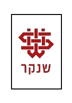
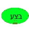

| ראש הטקסטיל בארץ, על ידי ועדה מטעם משרד המסחר ותעשייה. הקמת הבסיס לפעילות המכללה בוצעה בשנת 1970 פתחה המכללה את שעריה. מגמות הלימוד בזמן פתיחת המכללה היו: טכנולוגיה טקסטילית, ניהול הייצור, ניהול ושיווק, עיצוב אופנה ועיצוב טקסטילבשנותיה הראשונות של המכללה היא תוקצבה על ידי קרן האגרה לחינוך ומחקר בטקסטיל, אשר פעלה במסגרת משרד התעשייה והמסחר. כספי הקרן הגיעו מאגרה שהוטלה על תעשיני הטקסטיל בארץ. עובדה היוותה את הבסיס לקשר של תעשיית הטקסטיל בישראל אל שנקר. כמו כן, תעשינים רבים כיהנו בחבר הנאמנים של שנקר - הנדסה, עיצוב, אמנות היא מכללה אקדמית הממוקמת ברמת גן ומיועדת להכשרת כוח אדם אקדמי בתחום ההנדסה והעיצוב, וכן למתן שירותים לתעשיות מתקדמות בפיתוח ובמחקר. בית הספר נוסד בשנת 1970 לשם הכשרת עובדים מקצועיים לתעשייה בישראל. |
|
|  |  |
|  |
|  |
